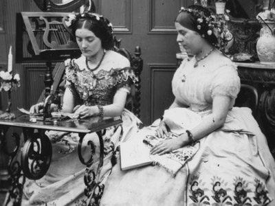
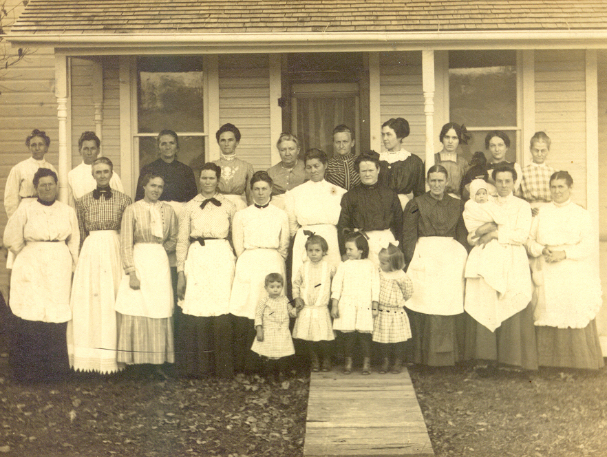

|
With the fall of Fort Sumter in April 1861, women North and
South responded by supplying volunteers with blankets,
clothes, and food. In villages, hamlets, cities and towns
women packed lunches, mended shirts and socks, sewed
uniforms and flags, and collected family quilts. Women
equipped their relatives, friends, and townsmen with
supplies to get them to the front, believing that the
government would then take over the provisioning of the
troops. But neither the United States nor Confederate
governments had the military infrastructure with which to
organize and equip a large army. As a result, at the
beginning of the Civil War individuals and local governments
provided their own uniforms, weapons, food, and general
equipment such as knapsacks, blankets and tents. Even after
the U.S. government had a system in place that combined
federal production with private enterprise, there was plenty
of room for the assistance of ladies' aid societies.
In both the North and the South, women's efforts quickly
evolved into soldiers' aid societies. The organizers had
been active in benevolence work before the Civil War and
transformed their groups to accommodate the soldiers or they
simply established new associations. Women wrote
organization constitutions, elected officers, established
dues and created work committees to cut, sew, and pack, as
|

Ladies' Aid Societies made flags, clothes,
and other supplies for soldiers.
|
well as solicit funds. Women volunteered their time and
talents with the patriotic sentiment that they were doing
their part for the cause. The societies provided the
soldiers with comforts when well and with hospital supplies
and nurses when wounded and sick. In the North, it is
estimated that over 20,000 ladies' aid societies operated
throughout the War. In the South, women established more
than 1,000 societies by the end of 1861, but Confederate
ladies never organized on a national scale and they faced an
array of problems that doomed the smooth and continuous
operation of their associations.
First, Southern ladies' aid societies remained the domain
of the elite ladies. This discouraged working class women,
who held the domestic skills, from participating, thus
hampering society relief efforts. Southern women turned
much of their time to fundraising when they realized that
many supplies needed to be purchased. Along with the basic
medical and domestic goods like bandages, scissors, and
Bibles, societies in Charleston, Mobile, Norfolk, and
Savannah raised money for the purchase of ships. However,
the Confederacy also lacked the overall resources that were
available to Northern women as goods became scarce with
intensifying war activities and the successful Union naval
blockade of Southern ports. Southern ladies' aid societies
finally collapsed when the Federal troops invaded the
Confederacy. Union soldiers stole the societies' supplies,
thus ending their operations.
In contrast, Northern women established a national
network of ladies aid societies that were able to support
the troops for the duration of the hostilities. While the
societies began at a grassroots level, it became apparent to
several women, particularly in the East, that a more
efficient system was needed to identify and locate misplaced
boxes, as well as the overlapping of efforts in one area and
the lack of supplies in another area. Creating such an
organized system, they thought, would help rather than
hinder the Army. Dr. Elizabeth Blackwell of New York was
the first to recognize the need for organization and called
a meeting for April 26, 1861 at the Cooper Union in New York
City. She invited some of the city's most prominent women
as well as Dr. Henry Bellows, the Unitarian minister of All
Souls Church. Before the meeting adjourned for the day, the
ladies and men present formed the Women's Central
Association of Relief (WCRA). They proposed that they would
"give organization and efficiency to the scattered efforts"
already in progress, that they would establish a
relationship with the medical staff of the Army, establish a
central depot for supplies, and investigate the needs of the
soldiers. Blackwell also began a program to train and
register female nurses. In the short term, the WCRA proved
to be a success. The ladies' aid societies of the northeast
responded by funneling their supplies into the office of the
WCRA in New York. Other women around the area who had not
yet organized were inspired to establish soldiers' aid
societies in their towns and began a relationship with the
WCRA.
The achievements of the WCRA were quickly overshadowed by
the creation of the United States Sanitary Commission
(USSC). Dr. Henry Bellows feared that the War Department's
announcement that they would not accept the nursing trainees
of the WCRA was the first of many military rejections of the
WCRA. Bellows proposed that a centralized, national
organization and separate from the WCRA was needed to
combine all of the efforts of the nation's relief
associations, help the army operate the hospitals and
determine the needs of the soldiers. Bellows suggested that
the new organization have government sanction, but operate
on private funds. On June 13, 1861, Bellows gained official
authority from President Lincoln who believed the USSC would
prove to be as useful as a "fifth wheel on a coach," but who
gave his approval anyway.
In Chicago, ladies like Mary A. Livermore helped
establish the Northwestern Sanitary Commission, which became
the main depot for Wisconsin, Michigan, Illinois, and Iowa
supplies. In Cleveland, women formed the Soldiers' Aid
Society of Northern Ohio. In Boston, they became known as
the New England Women's Aid Association and received goods
from Maine, New Hampshire, Vermont and Massachusetts. And
in Pennsylvania the Ladies' Aid Society of Philadelphia
received goods from around the state. All of these groups
became affiliates of the United States Sanitary Commission
and sent their supplies through their regional USSC
channels.
The USSC and their chapters expanded their work to
include sanitary inspection of camps, instruction of
soldiers on matters of water supply, placement of latrines,
and safe cooking methods. They provided meals, housing, and
transportation to soldiers on furlough and nursed those who
were too sick or wounded to continue. After the Battle of
Gettysburg, a grateful doctor wrote of the Sanitary ladies
aid: "I...get plenty to eat and of excellent quality from the
Sanitary Commission, eggs, chickens, crackers of every kind.
|

Nearly all Northern communities
had a Ladies' Aid Society. This one was located in
a small town in Ohio.
|
They are doing noble work." They helped soldiers obtain
their pay and also established a messenger service that
employed disabled veterans. They maintained hospital
records and helped locate wounded, captured and dead
soldiers for the distraught parents and relatives. The
ladies sustained these multi-faceted programs through a
variety of fund raising activities. The most popular form
was the sanitary fair, which usually lasted about two weeks
and included displays, entertainment, auctions, and
restaurants. The fair was the brainchild of Mary A.
Livermore and Jane C. Hoge who held a successful Chicago
fair in October 1863 in which the Northwest Commission
raised over $100,000.
In spite of these successes, the USSC never attained its
goal of creating an all-inclusive national system. Other
women like those who formed the Western Sanitary Commission
in St. Louis, and the Cooper Shop Volunteer Refreshment
Saloon and the Union Volunteer Refreshment Committee both of
Philadelphia chose to operate independent of the USSC.
These groups and hundreds of smaller societies across the
north contributed supplies to the USSC, but maintained their
independence believing autonomous societies could better
meet the needs of their local soldiers.
The USSC also vied for the ladies' supplies with the
United States Christian Commission (USCC). Organized by the
Young Men's Christian Associations across the north with the
ideal of caring for the soldiers' spiritual needs, the USCC
quickly became the USSC's arch rival. Independent societies
and USCC actions frustrated men and women dedicated to the
national goals of the USSC who saw their agency as the
symbol of Northern unity. Although there was much
infighting among the benevolent communities of the North
during the War, the ladies' aid societies were able to
supply troops and hospitals and consequently saved thousands
of soldiers' lives.
In short, ladies' aid societies, whether independent or
chapters of the USSC or its Southern counterparts, were in
the business of aiding the soldiers with whatever means
available. Northern and Southern women volunteered their
services with the call for troops in 1861 and helped their
causes by assisting the soldiers and in this way became
patriots of the War.
Source: Joan Waugh, ed., Facts on File Encyclopedia of American
History: Civil War and Reconstruction, 1856 to 1869 (New York: Facts on
File, 2003), 203-204.
|